Screens
Lilliput on FM-1's 240-pixel screen, drawn here by the same code that draws it on device.
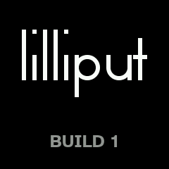
Starting
Name, drawn on a single grid, and build. Lilliput starts with a patch already sounding, drawn from any recipe, at a tempo drawn too.
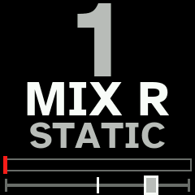
Main view
Chosen channel's number in its colour, its input, patch's name, its meter with fader's place, and its pan. Channel with nothing of it reaching output turns grey.
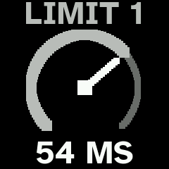
Turning a knob
On main view the 4 knobs reach GAIN, FREQ, LIMIT and SEND 1 (with SHIFT: NOISE, MID, PROTECT, SEND 2), each shown as a dial while it turns. LIMIT is limiter's look-ahead: loop's pitch.
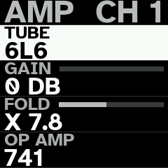
Channel's pages
OCT− and OCT+ go through AMP, NOISE, EQ, SEND and FX: 4 rows a page, 1 per knob, with SHIFT for the switches.
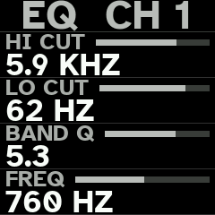
EQ
HIGH, LOW and middle filter: where a loop rings. A peak or narrow band is how you tune it.
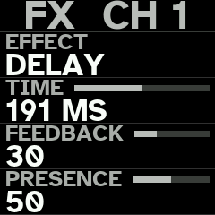
FX
Channel's effect slot: on channel as insert, or on send loop into return.
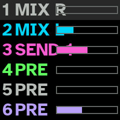
Overview
ARP: 6 channels at once, their inputs and levels as they sound.
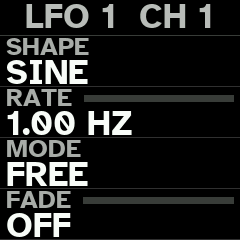
Motion
SEQ goes on from output's pages to chosen channel's 2 LFOs and its modulation matrix.
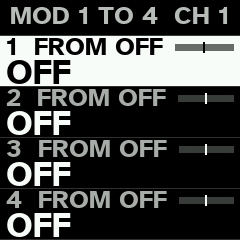
Matrix
8 slots a channel: where each comes from, where it goes and how far.
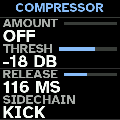
Compressor
SEQ's first page: it holds mixer's sound together and brings it forward against drums.
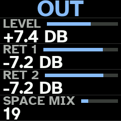
Output
Main level, 2 returns and SPACE, the reverb, then output's EQ and its effect slot.
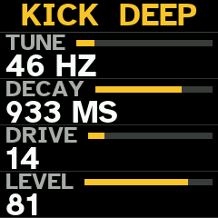
Drums
3rd black key from the right opens them. White keys 1 to 4 choose KICK, SNARE, HATS or PERC; SHIFT + one draws a new sound for it.
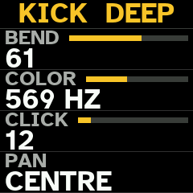
Voice's 2nd page
BEND, COLOR, CLICK and PAN; with SHIFT, METAL and noise's filter.
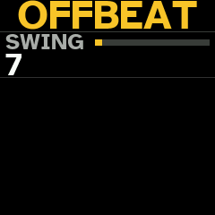
Drum rhythm
Its name and its swing. PRESETS goes through 12 rhythms.
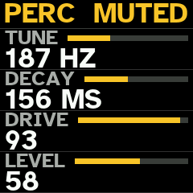
Muted voice
Voice's white key held mutes it; its key blinks while it is muted.
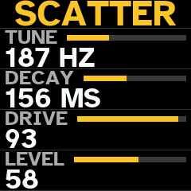
Break
Last white key held: variation of drums' rhythm, its way named in title. It starts on next beat and lasts while held.
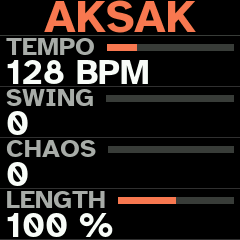
Tempo
Rhythm's key: TEMPO, SWING, CHAOS and gates' LENGTH, shared by rhythm and drums.
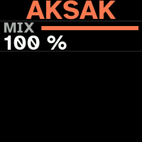
Rhythm mix
How much of the gates is heard against loops running on.
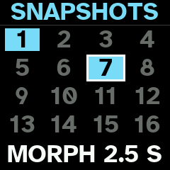
Snapshots
16 states of the whole mixer on white keys, recalled at once or morphed into over up to 30 seconds.
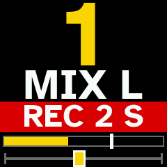
Gesture loops
REC records what your hands do to a channel and plays it back, round and round; each channel has its own loop.
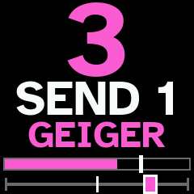
Recipes
PRESETS turns through recipes, name changing in place; SHIFT + HOME draws from the one named.
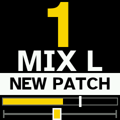
New patch
HOME: a whole new patch from any recipe, sounding at once.
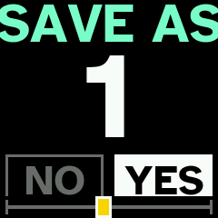
Sessions
SAVE held keeps the session: patch, its snapshots, its gesture loops, its drums and its compressor. 64 of them in FM-1's flash.